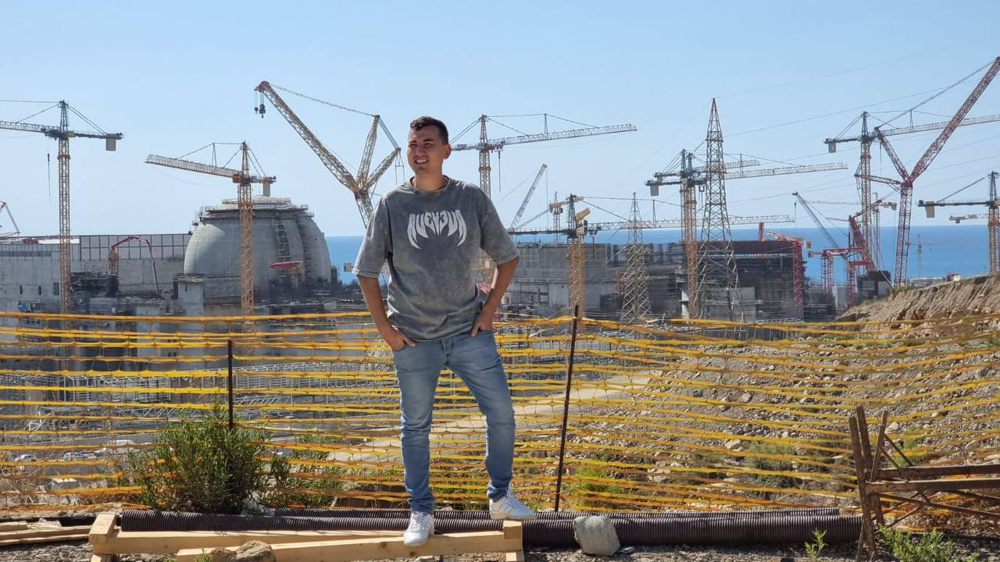

Data Analyst · Power BI · 14 лет опыта
Превращаю сырые производственные данные в управляемые аналитические системы. Power BI · Power Query (M) · Pivot (DAX) — на объектах атомной отрасли.

14 лет в строительстве и аналитике — от проектировщика слаботочных систем до BI-аналитика на атомной стройке. Понимаю процессы изнутри и строю отчётность, которой доверяют.
Сейчас — АЭС «Аккую», Турция. Автоматизирую обработку производственных и финансовых данных через Power BI, Power Query, DAX. Ускорение подготовки — в 10 раз.

Рассматриваю позиции BI-аналитика в строительстве, энергетике или промышленности. Готов к работе в России, Турции или Венгрии.